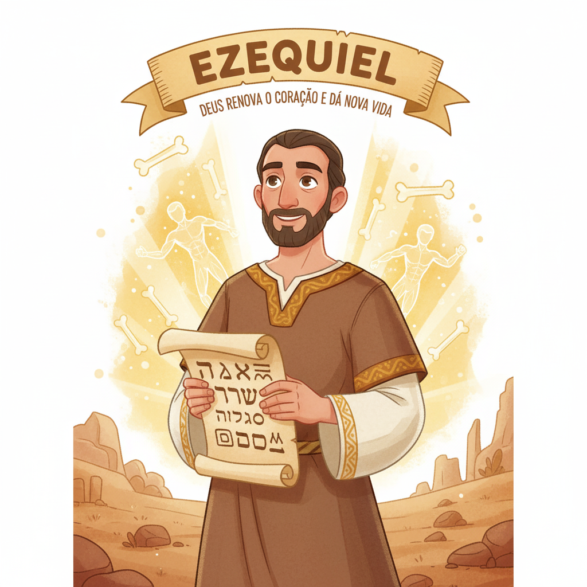
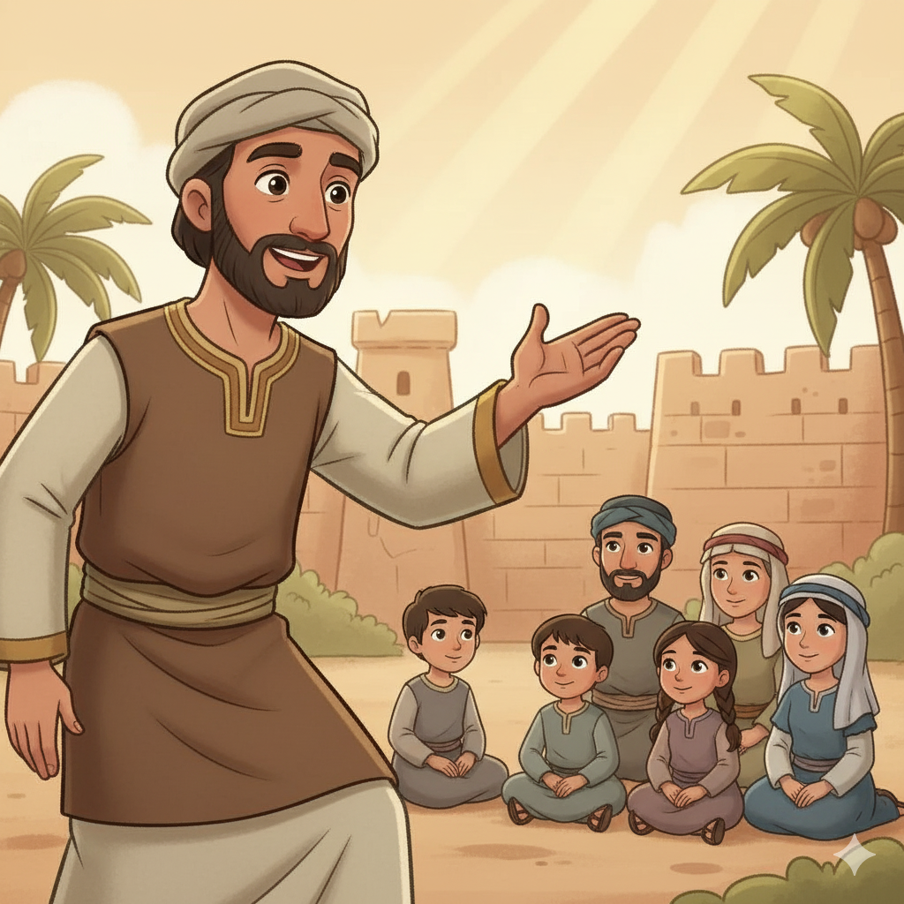
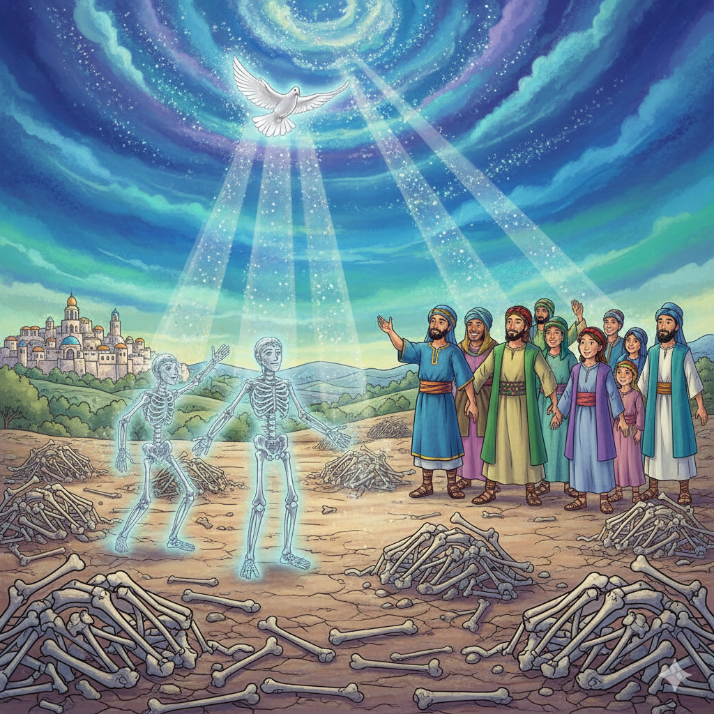
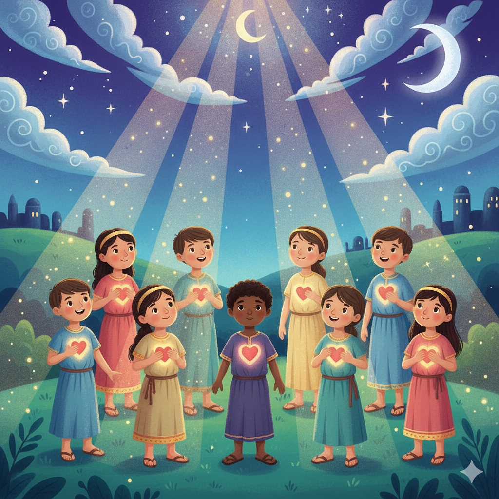
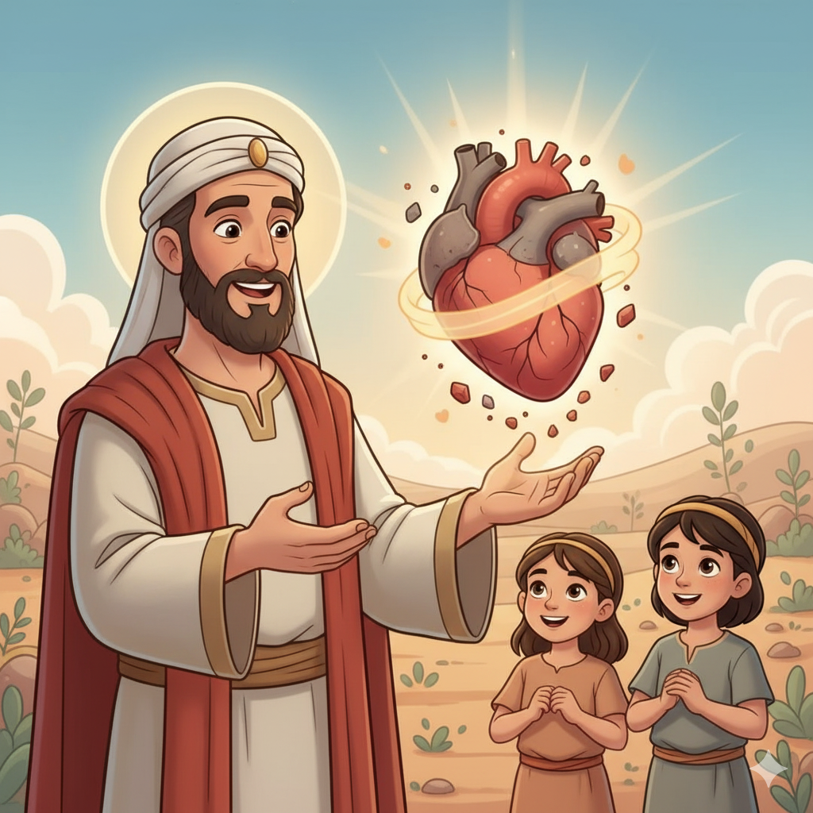
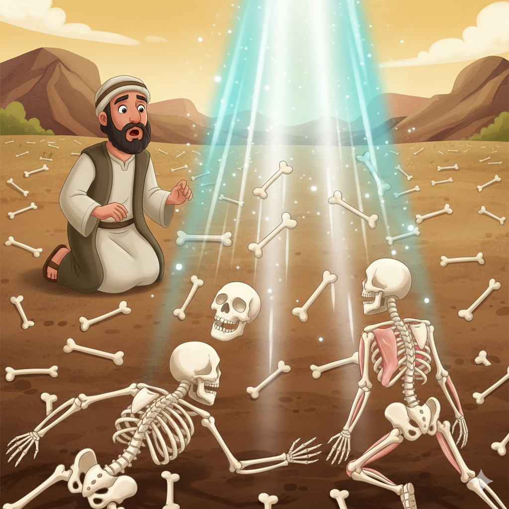

Visões, Ossos Secos e Coração Novo — Um Resumo Visual para Crianças
Ezequiel estava longe, exilado em terra estranha,
Quando a glória de Deus apareceu — que façanha!
Não ficou só em Jerusalém, no templo ou altar,
A glória de Deus foi até lá para o encontrar!
Não importa onde você está — distante ou perto,
A glória de Deus te alcança — isso é certo!
📖 Ezequiel 1:1 — "No trigésimo ano... estando eu entre os exilados... os céus se abriram e tive visões de Deus."
Ezequiel viu um vale cheio de ossos secos,
Parecia impossível, sem vida, sem nexos!
Mas Deus mandou: "Profetiza, chama o vento!"
E ossos ganharam vida — que espanto e assombramento!
O que parece morto para você hoje em dia,
Em Deus pode ressurgir cheio de alegria!
📖 Ezequiel 37:4-5 — "Ossos secos, ouçam a palavra do Senhor... eu farei entrar em vós o espírito, e vivereis."
"Tirarei o coração de pedra, duro e frio,
E darei coração de carne — novo e com brio!"
O Espírito de Deus morará dentro de nós,
Nos fazendo querer obedecer a Sua voz!
Deus não muda só o comportamento de fora,
Ele transforma o coração — isso é o que importa!
📖 Ezequiel 36:26 — "Dar-vos-ei um coração novo e porei dentro de vós um espírito novo."
❤️
"Dar-vos-ei um coração novo e porei dentro de vós um espírito novo; tirarei o coração de pedra e dar-vos-ei um coração de carne."
Ezequiel 36:26
"Coração de pedra" é o coração que não sente, não obedece, não ama. "Coração de carne" é sensível, vivo, capaz de amar de verdade. Deus promete fazer essa troca! E o Espírito Santo, dado a cada cristão, é o cumprimento exato dessa promessa!
Ezequiel era sacerdote que foi exilado para a Babilônia antes de Jerusalém ser destruída. Deus o chamou com visões espetaculares — rodas de fogo, criaturas voadoras, a glória de Deus como brasa e cristal. Ele também fazia encenações dramáticas para transmitir as mensagens de Deus!
📖 Leia na Bíblia — Ezequiel 2:1
"E me disse: Filho do homem, fica em pé; falar-te-ei."
O povo de Israel estava exilado na Babilônia — longe do templo, longe de casa, sem rei. Muitos pensavam: "Deus nos abandonou. Não há mais esperança." Era para esse povo desesperado que Ezequiel profetizava — com mensagens de juízo, mas também de restauração!
📖 Leia na Bíblia — Ezequiel 37:11
"Os nossos ossos secaram, e pereceu a nossa esperança; estamos de todo cortados."
Deus chamou Ezequiel de "atalaia" (sentinela/vigilante) — alguém que fica no alto da muralha para avisar o povo do perigo. Se o vigilante não avisa e alguém morre, a culpa é do vigilante. Essa é a seriedade da missão de pregar a Palavra!
📖 Leia na Bíblia — Ezequiel 33:7
"Assim, a ti, ó filho do homem, te constituí por atalaia da casa de Israel."


📖 Leia em casa!
Ezequiel tem 48 capítulos. Cap. 1 tem a visão mais alucinante da Bíblia; cap. 37 tem os ossos secos; cap. 36 tem a promessa do coração novo!
⚡ Parte 1 (Cap. 1–24): A Glória Parte e os Avisos
Deus chama Ezequiel com uma visão de Sua glória (carroça de fogo, quatro criaturas, rodas dentro de rodas). Depois mostra que a glória de Deus vai deixar o Templo — por causa do pecado do povo. A presença de Deus não pode ficar onde há idolatria.
📖 Ezequiel 10:18 — "Então a glória do Senhor saiu de sobre o limiar da casa."
⚖️ Parte 2 (Cap. 25–32): Julgamento das Nações
Ezequiel profetiza contra as nações ao redor de Israel que zombaram e se aproveitaram da queda de Judá. Deus é justo com todos os povos, não só com Israel. Ninguém escapa da justiça de Deus — mas também ninguém escapa do Seu amor!
📖 Ezequiel 25:17 — "E saberão que eu sou o Senhor."
🌱 Parte 3 (Cap. 33–48): Restauração e Nova Vida!
O clímax glorioso: ossos secos que revivem (Ez 37), coração novo e Espírito novo (Ez 36), e uma visão de um novo Templo do qual jorra um rio que faz florescer tudo ao redor (Ez 47). A glória de Deus volta — para ficar!
📖 Ezequiel 43:2 — "E eis que a glória do Deus de Israel vinha do lado oriental... e a terra resplandecia de sua glória."
Os israelitas pensavam que Deus só estava em Jerusalém, no Templo. Ezequiel recebeu suas visões em Babilônia — a mil quilômetros! Isso prova que Deus não está preso a um lugar. Ele está com você onde quer que você esteja!
📖 Ezequiel 11:16
"Ainda que eu os haja lançado para longe entre as nações... eu lhes serei por santuário pequenino."
A visão do vale dos ossos secos (Ez 37) é um dos textos mais esperançosos da Bíblia. Deus pergunta: "Esses ossos podem viver?" E ressuscita um exército inteiro! Isso ensina que não existe situação sem saída com Deus!
📖 Ezequiel 37:14
"Porei o meu Espírito em vós, e vivereis, e vos estabelecerei na vossa própria terra."
Ezequiel 36:26-27 promete coração novo e espírito novo — cumprido em Pentecostes (At 2), quando o Espírito Santo desceu sobre os discípulos! E o rio de água viva saindo do Templo (Ez 47) aponta para Jesus que disse: "De dentro dele correrão rios de água viva" (Jo 7:38).


O povo achava que Deus tinha perdido o controle. Ezequiel vem dizer: Deus está no trono — sempre esteve. Ele permitiu o exílio como disciplina, mas não abandonou o povo. A frase "saberão que Eu sou o Senhor" aparece mais de 70 vezes no livro!
📖 Ezequiel 36:23
"E as nações saberão que eu sou o Senhor, diz o Senhor Deus, quando for santificado em vós diante dos seus olhos."
Ezequiel termina com uma visão gloriosa: novo templo, nova cidade, nova terra — e a glória de Deus voltando para ficar para sempre. Essa visão aponta para o novo céu e nova terra do Apocalipse — a destinação final de todo o povo de Deus!
📖 Ezequiel 48:35
"E o nome da cidade desde aquele dia será: O Senhor está ali."
🌟 Lição Principal: Deus nunca abandona o Seu povo. Mesmo nas piores circunstâncias, Ele age, restaura e promete um futuro glorioso com coração novo e Espírito vivo!
🎭 Ezequiel fazia "teatro profético": Ele encenava as mensagens de Deus! Deitou de lado por 390 dias para simbolizar os anos de pecado de Israel, construiu uma miniatura de Jerusalém sendo sitiada, cortou o próprio cabelo e dividiu em três partes — tudo como mensagens vivas!
🤐 Ficou mudo por períodos: Deus fez Ezequiel ficar sem fala por longos períodos (Ez 3:26) — ele só podia falar quando Deus abria sua boca. Era um sinal poderoso para o povo: as únicas palavras que importam são as de Deus!
🌊 O rio que faz florescer tudo: Em Ez 47, Ezequiel vê um rio saindo do Templo — começando por cima do tornozelo, depois joelhos, depois a cintura, depois profundo demais para atravessar. Onde o rio chega, tudo floresce! Isso aponta para o Espírito Santo e para Jesus, o Templo!

Converse com sua família, turma ou professor sobre essas perguntas!
🦴
Os ossos secos representavam o povo sem esperança. Tem alguma área da sua vida que parece "seca" ou sem esperança? O que você acha que Deus pode fazer nessa situação se você pedir a Ele?
❤️
Deus promete trocar o coração de pedra por um de carne. Como seria um "coração de pedra" no dia a dia? E um "coração de carne"? Em que momento você age com coração de pedra com as pessoas ao redor?
🗼
Ezequiel era um "vigilante" — responsável por avisar o povo do perigo. Você tem alguém próximo que precisa ouvir sobre Jesus? O que te impede de compartilhar? O que te daria coragem?
Escolha um desafio (ou faça os três!) e seja um explorador da Bíblia!
📖
Leia a visão dos ossos secos em voz alta! Depois pense: que "osso seco" da sua vida você quer pedir a Deus que reviva? Escreva numa folha e ore sobre isso esta semana.
✍️
Escreva "Dar-vos-ei um coração novo" e cole no espelho do banheiro. Toda manhã ao ver seu rosto, lembre: Deus quer te dar um coração novo — sensível, vivo e cheio do Espírito!
🙏
Escolha uma pessoa que parece longe de Deus e ore por ela todos os dias esta semana — como um vigilante que cuida do rebanho. Guarde o nome em segredo e depois compartilhe o que aconteceu!
Trilho Kids | Desenvolvido com ❤️ para crianças © 2025